Meow Pop · Canva visual skin
Logo vàng/tím, mèo cam đồng nhất, khối 3D mềm, nền trời xanh và giao diện kem/lavender. Bốn màn và luật suy luận giữ nguyên.
Chơi bản build · Kết quả kiểm chứng · Bảng style
Cập nhật khối 3D và particle
Mặt khối phồng, dày hơn và có highlight rõ. Ô đã nổ chỉ giữ nền màu; không có chấm. Mảnh vỡ nhỏ cùng màu bay phía trên nền, kèm bụi mềm và glint ngắn.
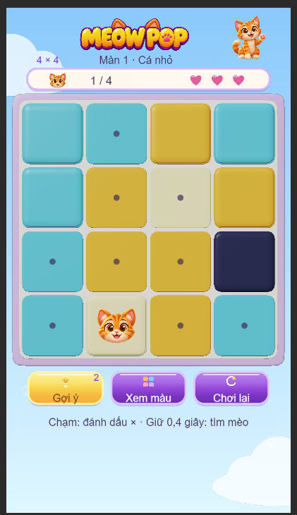
Ảnh bạn gửi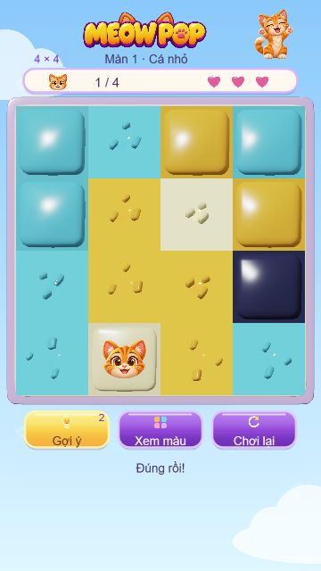
Khối mới, giữ nền màu khi nổ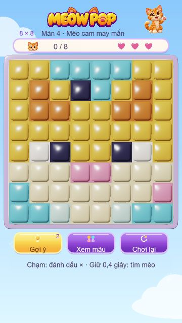
Bàn 8×8Định hướng → triển khai
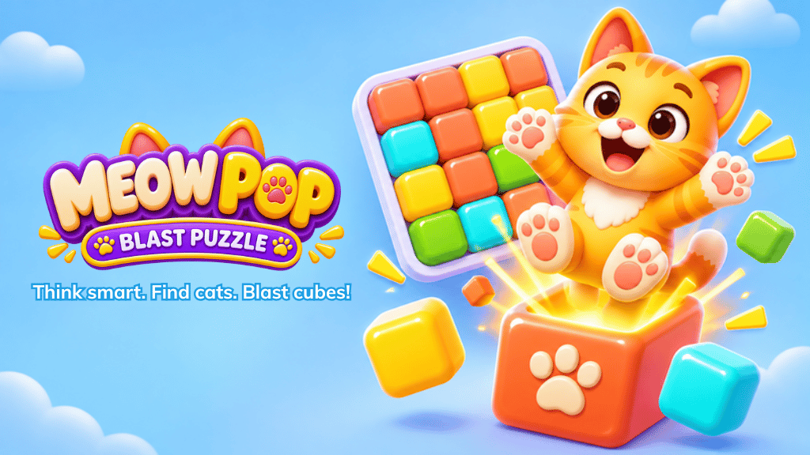
Canva: chất liệu đồ chơi, mèo cam, vàng/tím và trời xanh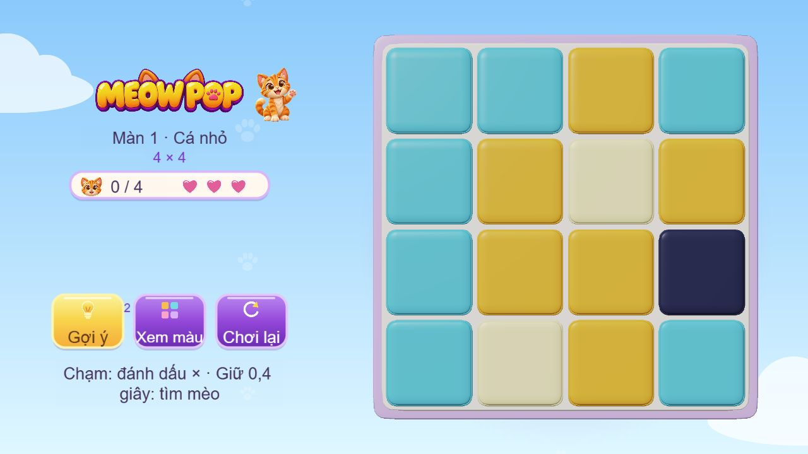
Gameplay: bàn 3D, HUD rõ trạng thái, icon và sprite mascotSkyCreamPurpleGoldInk
Trước / sau · Gameplay
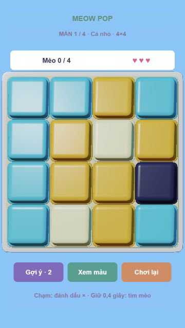
Trước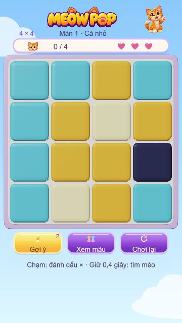
Sau · 360×640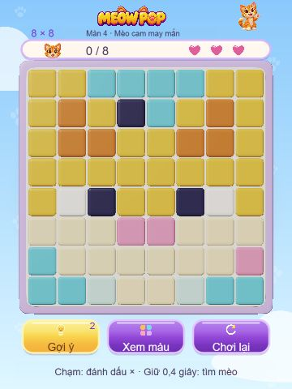
8×8 · 360×480Tutorial và kết quả
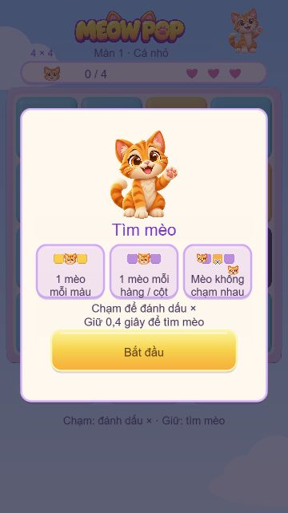
Ba quy tắc trực quan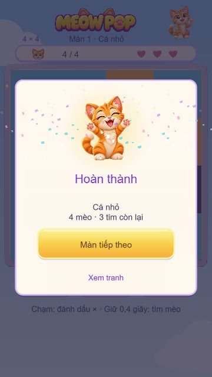
Thắng và confetti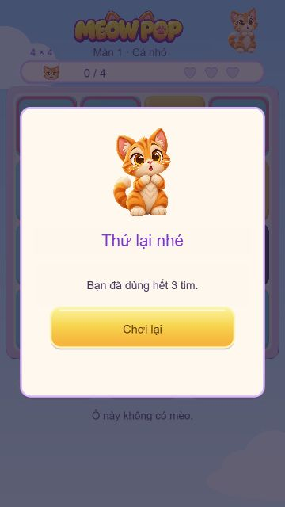
Thua và RetryInspect, blast và màn ngang
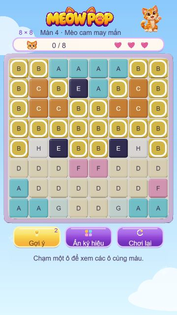
Vùng màu A–H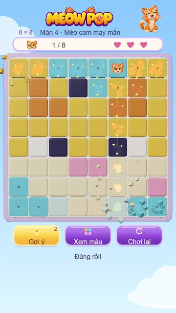
Wave, sprite VFX và mảnh 3D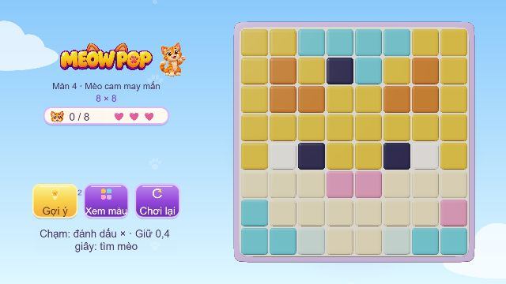
27 test + typecheck pass. Bốn màn đã chơi hoàn thành trong build mới. Native Editor Preview và thiết bị thật chưa xác minh; xem verification để biết giới hạn.